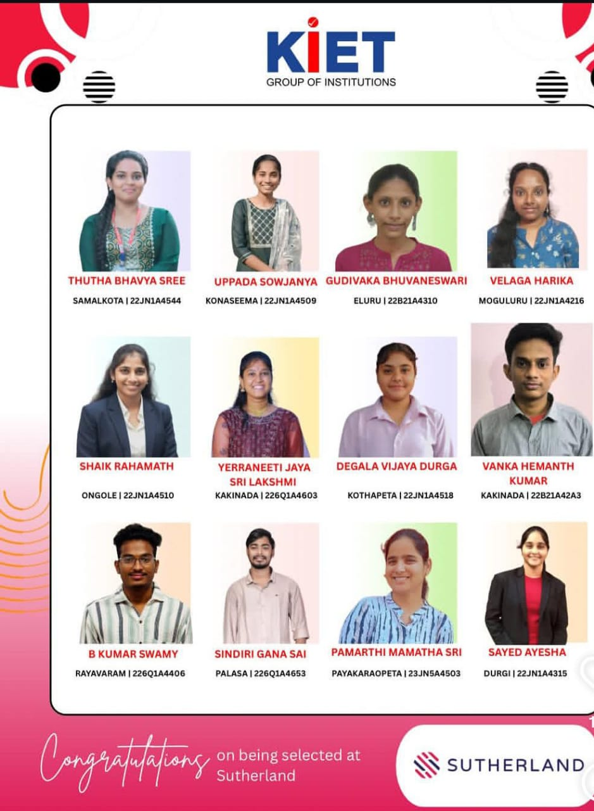
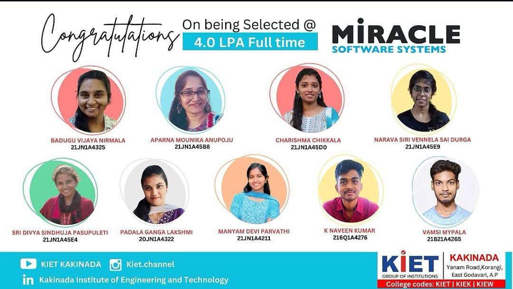

KAKINADA INSTIUTE OF ENGINEERING TECHNOLOGY
Where knowledge meets innovation and ambitions turn into achievements. KIET is committed to creating professionals who lead with excellence and integrity.
HOME PAGE
The KIET College, Korangi website is a comprehensive digital platform that represents the college’s academic excellence, infrastructure, and campus life. It provides students, parents, and visitors with complete information about the institution, including courses, departments, faculty members, admissions, placements, and facilities. The website is designed with a simple and user-friendly interface, allowing users to easily access important updates, announcements, events, and achievements of the college. It highlights the college’s modern laboratories, library, hostel facilities, technical activities, and opportunities for student growth. The website serves as a digital identity of KIET by showcasing its commitment to quality education, innovation, and career development. It helps students make informed decisions about their education while connecting them with the latest information and opportunities provided by the college.
.jpeg)

ABOUT OF KIET COLLEGE
KIET College, Korangi, has a peaceful and green campus that provides a good atmosphere for learning. The campus is spacious, clean, and well maintained. It has modern academic blocks with well-ventilated classrooms. Smart classrooms make teaching and learning more interactive. The college has well-equipped laboratories for different engineering departments. A central library with a wide collection of books and digital resources supports students in their studies. High-speed Wi-Fi is available across the campus. Separate hostel facilities are provided for boys and girls with good security. The hostel rooms are comfortable and maintained neatly. Hygienic food is served in the college canteen and hostel mess. Sports facilities such as cricket, volleyball, basketball, and indoor games encourage physical fitness. The college also has a gym for students. Seminar halls and auditoriums are used for workshops, technical events, and cultural programs. Students actively participate in technical clubs, cultural activities, and sports competitions. The campus has greenery, gardens, and open spaces that create a pleasant environment. Transport facilities are available from nearby towns and villages. The college conducts placement training, personality development, and skill enhancement programs. Experienced faculty members guide students in academics and career development. The campus provides a safe, disciplined, and student-friendly environment. Overall, KIET College, Korangi, offers a balanced campus life with quality education, good facilities, and opportunities for the overall development of students..jpeg)

CAREERS
The KIET College, Korangi website is a comprehensive digital platform that represents the college’s academic excellence, infrastructure, career opportunities, and campus life. It provides students, parents, and visitors with complete information about the institution, including courses, departments, faculty members, admissions, placements, and career development opportunities. The website has a simple and user-friendly interface that helps users easily access important updates, announcements, events, and achievements of the college. It highlights the college’s modern laboratories, library, hostel facilities, technical activities, and opportunities for student growth. The Careers section provides valuable information about placement opportunities, internships, skill development programs, recruitment drives, and career guidance to help students build a successful future. The website serves as a digital identity of KIET by showcasing its commitment to quality education, innovation, and professional development. It helps students stay connected with the latest academic and career-related opportunities offered by the college.



COURSES
KIET College, Korangi offers various School, Diploma,undergraduate and postgraduate courses designed to provide students with strong technical knowledge and practical skills. The courses are structured according to industry requirements and focus on innovation, problem-solving, and career development. The college provides quality education through experienced faculty members, modern laboratories, and advanced learning facilities.